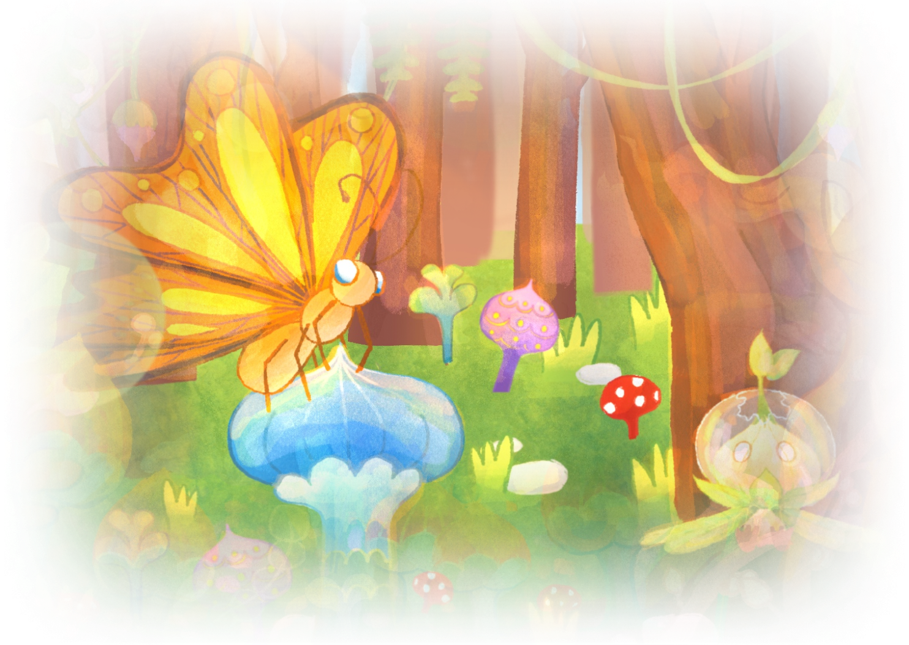
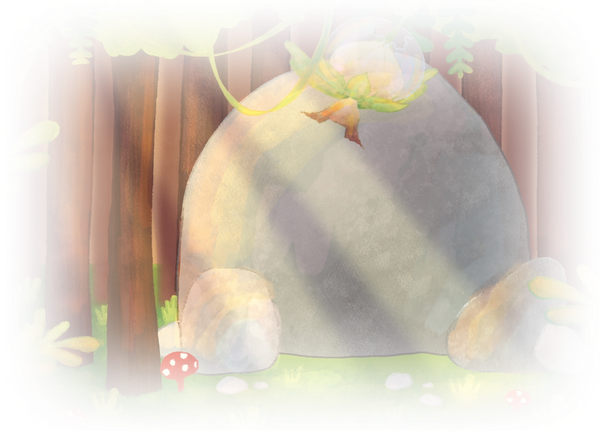

ณ เมืองพืชแห่งหนึ่ง
ที่เมืองนี้ผู้คนต่างมีเป้าหมายที่จะเป็นพืชพิเศษ
นั่นเป็นสิ่งที่เล่าขานกันเรื่อยมาแม้จะไม่มีใครรู้ที่มาที่แน่ชัด
แต่นั่นเป็นสิ่งที่ปลูกฝังชาวเมืองมาโดยตลอดว่า
หากจะเป็นพืชที่ยิ่งใหญ่และประสบความสำเร็จได้
พืชตนนั้นจะต้องเป็นพืชพิเศษ
ซึ่งการจะเป็นพืชพิเศษนั้นมาจากการที่พืชตนหนึ่งได้รับแสงศักดิ์สิทธิ์
แต่การที่จะได้รับแสงศักดิ์สิทธิ์ จะต้องเดินทางไปยังจุดที่ลึกที่สุดของป่าต้องมนต์
เพราะที่จุดลึกที่สุดของป่านั้นจะมีแสงศักดิ์สิทธิ์อยู่ที่นั่น
แต่เส้นทางในป่าต้องมนต์นั้นก็มีอุปสรรคมากมาย
ที่ทำให้ไม่ใช่ทุกคนจะสามารถเป็นพืชพิเศษกันได้ง่าย ๆ
พืชตนหนึ่งที่อาศัยอยู่ในเมืองพืชแห่งนั้น
เขาคือพืชที่ก็ได้ฟังเรื่องราวที่เล่าขานนั้นมาตั้งแต่เล็กจนโต
รวมถึงได้เห็นพืชพิเศษที่ได้รับการยกย่องและชื่นชมจากพืชตนอื่นมากมาย
เขาเองจึงมีเป้าหมายที่อยากจะเป็นพืชพิเศษเช่นกัน
แล้ววันหนึ่ง หลังจากที่<>ได้เตรียมความพร้อม
เพื่อการเดินทางนี้มาอย่างเนิ่นนาน
ก็ได้ตัดสินใจออกเดินทางไปยังป่าต้องมนต์
แม้ไม่รู้ว่าเส้นทางข้างหน้าจะมีอะไรรออยู่
แต่<>ก็ตั้งตารอคอยวันที่เขาจะได้ออกเดินทาง
คุณอยากให้การเดินทางในครั้งนี้เป็นอย่างไร
เป็นการเดินทางที่แสนสนุกและน่าตื่นเต้น
เป็นการเดินทางที่มีอุปสรรค สิ่งกีดขวางมากมายรออยู่
เป็นการเดินทางที่ผ่อนคลาย ไม่เคร่งเครียด
เป็นการเดินทางที่ไม่รู้ว่าข้างหน้าจะมีอะไรรออยู่
Achievement Unlocked
การเริ่มต้นการเดินทาง
เมื่อ<>เริ่มต้นการเดินทาง เส้นทางนั้นดูงดงามและสดใส ไม่รู้ว่าด้วยความรู้สึกที่แรงกล้า
ความต้องการ หรือความใฝ่ฝันที่ยังชัดเจนอยู่หรือเปล่าที่ทำให้เป็นเช่นนั้น
การเดินทางในครั้งนี้ให้ความรู้สึกที่วิเศษมาก
หากไม่ได้เริ่มการเดินทางก็คงไม่ได้เห็นวิวที่งดงามและความรู้สึกที่ประทับใจเช่นนี้สักที
คุณคิดว่าอะไรคืออุปสรรคที่ผ่านไปได้ยากที่สุด
ช่วงเริ่มต้นการเดินทาง
อุปสรรคและเส้นทางระหว่างทาง
การเผชิญหน้ากับความกลัว
การเปรียบเทียบตัวเองกับคนอื่น
แม้การเดินทางของ<>จะไม่ได้ราบเรียบ
ทั้งการพบเจอกับเส้นทางที่ยากลำบาก
และการทำพลาดนับหลายหน
จนทำให้<>ได้รับบาดเจ็บและมีรอยแผลมาบ้าง
แต่<>ไม่คิดยอมแพ้ง่าย ๆ
และคิดว่าเขาจะพยายามทำให้ดีขึ้นในครั้งต่อไป
แม้จะคิดได้แบบนั้น
แต่ในใจของ<>ก็นึกถึงเพื่อนที่เมืองพืชตนอื่น ๆ
บางตนสามารถปีนป่ายเถาวัลย์ได้อย่างคล่องแคล่ว บางตนก็สามารถขุดมุดดินได้
ทำให้ทั้งสองนั้นเดินทางได้รวดเร็วมากกว่า
เมื่อเทียบกับ<>ที่เป็นเพียงพืชธรรมดา ที่ทำได้เพียงเดินดินปกติ
ไม่มีความสามารถอะไรที่พิเศษหรือโดดเด่นเหมือนกับพืชตนอื่น
ตอนนี้ คุณคิดว่าคุณสามารถทำตามเป้าหมายของตัวเองที่วางไว้ได้ไหม
ได้อย่างแน่นอน
น่าจะได้
ไม่แน่ใจเลย
ไม่น่าจะได้
แม้ในใจของ<>จะมีความสงสัยและรู้สึกที่ไม่ดีอยู่บ้าง
แต่<>ก็มุ่งหน้าออกเดินทางต่อสู่เส้นทางที่เขาวาดฝันไว้
Achievement Unlocked
เรียนรู้ที่จะอยู่กับความกลัว
Achievement Unlocked
เรียนรู้ที่จะล้มแล้วลุกให้เป็น
เมื่อเดินทางต่อ<>ได้พบกับผีเสื้อยักษ์ตัวหนึ่งนอนบาดเจ็บอยู่
<>จึงตัดสินใจเข้าไปช่วยผีเสื้อนั้นไว้
จากนั้นผีเสื้อก็กลับมามีสภาพที่ดีขึ้น
แต่<>พบว่าตัวเองนั้นเริ่มเหนื่อยล้าจากการเดินทางที่แสนยาวนาน
ผีเสื้อจึงชวนให้<>หยุดพักผ่อนใต้เงาร่มไม้ด้วยกันก่อนที่จะเดินทางไปต่อ
กดเพื่อพักผ่อนชั่วขณะระหว่างทาง
กดเพื่อเดินทางต่อ
ทั้งสองได้พักผ่อนใต้ร่มเงาไม้
จากนั้นทั้งคู่ได้ทำความรู้จักกันมากขึ้น แบ่งปันเรื่องเล่าระหว่างทาง
จนเกิดเป็นความสัมพันธ์และมิตรภาพที่ดีต่อกัน
Achievement Unlocked
มิตรภาพระหว่างทาง
Achievement Unlocked
เรียนรู้ที่จะหยุดพัก
<>ออกเดินทางต่อและเจอกับทางตัน
มีต้นไม้มากมายและหินขนาดใหญ่ขวางเส้นทางที่ต้องไปต่อ
แต่<>ไม่ยอมแพ้ และหาทางที่จะไปต่อ แม้จะไม่เป็นไปตามแผนที่วางไว้
แต่<>พยายามสำรวจเพื่อแก้ไขในสิ่งที่เกิดขึ้น
ลองกดตรงนี้
ลองกดตรงนี้
ลองกดตรงนี้
หินมีขนาดใหญ่และหนักมากจึงไม่สามารถขยับได้เลย
ช่องระหว่างหินกับต้นไม้มีขนาดเล็กมาก ไม่สามารถผ่านได้
มีหินวางเรียงเป็นขั้นอยู่ ทำให้สามารถปีนข้ามไปอีกฝั่งได้
Achievement Unlocked
ความมุ่งมั่น
เมื่อ<>เดินทางต่อลึกเข้าไปในป่ามากยิ่งขึ้น
เส้นทางในป่าเริ่มมืดขึ้นเรื่อย ๆ แสงสว่างเริ่มหายไป
ตะเกียงไฟที่ใช้นำทางมาตลอดการเดินทางเริ่มติด ๆ ดับ ๆ ไม่มั่นคงเหมือนอย่างตอนแรก
เพราะเส้นทางที่ผ่านมาทำให้ตะเกียงไฟนั้นเสียหายทีละเล็กทีละน้อย
ช่วงที่ตะเกียงไฟดับ <>รู้สึกถึงดวงตามากมายที่จ้องมองมา
เป็นสายตาที่<>เหมือนเคยเห็นมาบ้างและบางสายตาก็ไม่คุ้นเคยเลย
สายตาเหล่านี้ทำให้คุณรู้สึกอย่างไร
น่าตื่นเต้น
กลัว
กดดัน
ไม่รู้สึกอะไร
เมื่อเดินทางต่อ <>จึงรู้ว่ามีอะไรบางอย่างกำลังไต่ที่ตัวอยู่
ซึ่งสายตาเหล่านั้นที่มองมาคือแมลงกินพืช
เป็นแมลงที่จะกัดกินพืชทีละเล็กทีละน้อย ทำให้บาดเจ็บและได้บาดแผลใหญ่ขึ้นเรื่อย ๆ
หากไม่รีบนำแมลงเหล่านี้ออกไปอาจทำให้เกิดสิ่งที่เลวร้ายกว่านี้เกิดขึ้น
กดเพื่อตะโกนขอความช่วยเหลือ
ทันใดนั้นเอง ผีเสื้อที่<>เคยช่วยไว้ได้บินมา
และพา<>ออกไปจากสถานการณ์ที่ไม่พึงประสงค์ตรงนั้น
ผีเสื้อพา<>ไปยังอีกที่หนึ่ง ที่ที่ไม่มีแมลงกินพืชอยู่
<>กล่าวขอบคุณผีเสื้อแล้วผีเสื้อก็บินจากไป
<>พบว่าตะเกียงไฟที่ถือมาตลอดการเดินทางได้หล่นหายไปในป่า
เหลือเพียงร่างกายตัวเองที่เต็มไปด้วยบาดแผลมากมาย
แต่เนื่องจากเวลาที่เหลือน้อยลงทุกที
แสงอาทิตย์ที่เริ่มหายไปจากขอบฟ้า แสงสว่างที่น้อยลง
ทำให้<>ต้องรีบเดินทางต่อแม้ร่างกายแทบจะไปต่อไม่ไหว
<>เดินทางต่อเข้าไปในป่าที่ลึกขึ้น
แม้ตะเกียงไฟจะหล่นหายไปในป่าแล้ว แต่<>ยังมีไม้ขีดไฟติดตัวอยู่
แม้ไฟจากไม้ขีดไฟจะบอบบาง สว่างและมั่นคงน้อยกว่าตะเกียงไฟ
แต่นั่นเป็นเสมือนความหวังและความมั่นใจที่หลงเหลืออยู่ในตัว<> แม้จะเล็กน้อยแต่นั่นก็เป็นสิ่งที่ทำให้เขาไปต่อได้
เมื่อเข้าไปในป่าลึกมากยิ่งขึ้น <>เริ่มหลงทางเพราะแสงสว่างที่น้อยลง
และรู้สึกถึงเงาอะไรบางอย่างที่ไล่ตามมา
เป็นเงามืดที่ค่อย ๆ คลืบคลานไล่ตามมา ซึ่งดูน่ากลัวเป็นอย่างมาก
<>ในตอนนั้นทำได้แต่เพียงวิ่งหนีเงาที่ไล่ตามมา
เงาที่ไล่ตามมานั้นคือ
ความกลัวที่จะทำไม่สำเร็จ
ความกลัวที่จะไม่เป็นที่ยอมรับ
ความกลัวที่จะเป็นคนที่เก่งไม่พอ
ความกลัวที่จะผิดหวัง
Achievement Unlocked
การถอยหนีความกลัว
<>วิ่งหนีจนกระทั่งรากของตัวเองได้ไปติดกับพื้นป่า รั้งไว้ไม่ให้เขาไปต่อได้
<>พยายามดิ้นรนให้รากของตัวเองหลุดออกมาจากตรงนั้น
แต่ยิ่งดิ้นเท่าไหร่ก็ยิ่งเจ็บ <>ดิ้นอยู่สักพักและตั้งสติได้
แล้วจึงตัดสินใจเผชิญหน้ากับความกลัวหลังจากวิ่งหนีเงานั้นได้สักพัก
เงาเข้ามาใกล้ขึ้นเรื่อย ๆ คุณจะทำอย่างไรกับสิ่งที่เกิดขึ้น
ดิ้นอีกเพื่อให้รากหลุดจากพื้น
หันกลับไปสู้กับเงา
ป้องกันตัวเอง
ตัดรากตัวเองทิ้งเพื่อไปต่อ
<>หันกลับมามองแล้วพบว่าเงานั้นไม่ได้มีอยู่จริง
Achievement Unlocked
เผชิญหน้ากับความกลัว
<>กำลังจะเดินหน้าต่อแต่พบกับกิ่งไม้ยักษ์ที่มีรูปร่างคล้ายมือ
ยื่นเข้ามาหา<> พยายามสื่อว่ากำลังจะช่วยให้เขาไปต่อ
ปรากฏว่ากิ่งไม้ที่ยื่นเข้ามาช่วย<>ไว้นั้นคือกิ่งไม้ของต้นไม้ใหญ่
ต้นหนึ่งในป่า ที่มีลักษณะคล้าย ๆ กับ<>
ต้นไม้นั้นได้ช่วยเหลือ<>ไว้และได้ชี้ทางที่ควรจะไปต่อ
รวมถึงได้ให้ยาวิเศษกับ<>ดื่มด้วยก่อนจะจากกัน
<>เดินทางด้วยแรงเฮือกสุดท้ายแม้รู้ว่าไม่ทันการณ์แล้ว
แต่<>ก็เดินทางต่อจนไปจบ ณ ที่แห่งหนึ่ง
ที่แห่งนั้นคือแหล่งน้ำศักดิ์สิทธิ์ เมื่อ<>เดินไปถึงแหล่งน้ำ
จึงเลือกที่จะพักและดื่มน้ำจากแหล่งน้ำ
<>มองไปที่ผิวน้ำและเห็นเงาสะท้อนของตัวเองอยู่บนผิวน้ำในลักษณะต่าง ๆ
<>ได้เห็นเงาสะท้อนของตัวเองที่บิดเบี้ยว เงาสะท้อนที่เบลอ ไม่ชัดเจน
และเงาสะท้อนตัวเองที่มีขนาดเล็กกว่าปกติ
เมื่อ<>มองไปที่เงาสะท้อนของตัวเอง ก็เหมือนกับได้เห็นตัวเองที่ชัดมากขึ้น
และได้เห็นว่าการเดินทางที่ผ่านมาตัวเองได้เติบโตมากขึ้นขนาดไหน
จากนั้นฝนก็ตกลงมาและกระทบกับเงาบนผิวน้ำหายไป
<>เงยหน้ามองขึ้นฟ้าและพบว่าฝนกำลังตกลงมาอย่างแรง
จึงต้องรีบหาที่หลบฝนโดยเร็ว
<>ยืนขึ้นเพื่อที่จะเดินไปหาที่หลบฝน
แต่เขาก้าวพลาดและลื่นตกลงไปในแหล่งน้ำ
<>ไม่ได้สติ จมดิ่งลงไปในน้ำลึกขึ้นเรื่อย ๆ ในใจของ<>ก็รู้สึกถึงความสิ้นหวัง
ความรู้สึกที่ไปต่อไม่ไหว ความรู้สึกที่ไม่ดีต่าง ๆ ที่ถาโถมเข้ามาในใจพร้อม ๆ กัน
แต่แล้ว<>ก็นึกถึงเส้นทางที่ผ่านมาตลอดการเดินทาง

ตั้งแต่จุดเริ่มต้นของการเดินทาง

ช่วงเวลาดี ๆ และสิ่งดี ๆ ที่เกิดขึ้น
เส้นทางที่แม้จะยากลำบาก แต่ก็สวยงาม

อุปสรรคมากมายที่ได้พบเจอและได้ฝ่าฟันผ่านมา
รวมถึงการที่ได้เผชิญหน้ากับสิ่งที่ตัวเองกลัว
<>คิดย้อนเรื่องราวทั้งหมดและได้สติขึ้นมา จึงว่ายน้ำขึ้นไปที่ฝั่งโดยเร็ว
Achievement Unlocked
รับรู้คุณค่าของตัวเอง
<>นั่งพักอยู่ใต้ต้นไม้ใหญ่ต้นหนึ่งและ
ทบทวนเรื่องราวระหว่างการเดินทางทั้งหมดอีกครั้ง
<>เงยหน้ามองฟ้า
พบว่าตอนนี้เป็นเวลาที่ดึกมากแล้ว
ซึ่งแม้จะเลยเวลาที่จะไปรับแสงศักดิ์สิทธิ์ได้แล้ว
แต่บนท้องฟ้าค่ำคืนนี้ก็เต็มไปด้วยดวงดาวระยิบระยับมากมาย
“ชีวิตสอนอะไรเรามากมาย ทุกเส้นทางที่เราผ่านมา
ปลายทางนั้นไม่ใช่สิ่งสำคัญ แต่เส้นทางระหว่างทางต่างหาก
ที่สอนอะไรบางอย่างให้แก่เราเสมอ”
“อย่าลืมว่าเราได้ชัยชนะในทุก ๆ วันที่ไม่ยอมแพ้”
ขอบคุณที่ร่วมเดินทางครั้งนี้จนจบ
ทุกการเดินทางที่ผ่านมาคงจะให้บทเรียนคุณมากมาย
และต่อจากนี้ยังมีเส้นทางอีกยาวไกลที่เป็นของคุณที่จะตัดสินใจ
หากมีข้อคิดเห็นหรืออยากแบ่งปันสิ่งใด สามารถเข้ามาแสดงความคิดเห็นได้ที่
#journeysbeforethebloom
แตะเพื่อไปต่อ >